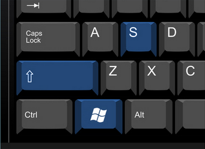
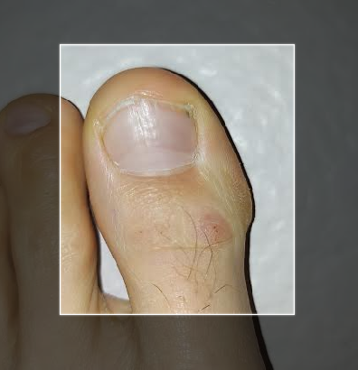
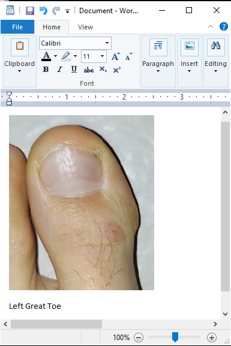
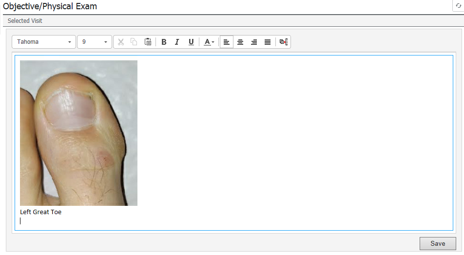

Take a picture with your phone and email it to yourself. With the image pulled up in your email client, use the Ctrl+MiddleMouseWheel to zoom in and out to shrink the image down to an appropriate size. If you use an image that is too big, the editor will become very sluggish.
Press the WindowsKey+Shift+S key to use the snippet tool to select the part of the image that is important.


Paste the image into Wordpad or MS Word with Ctrl+V. Add a small title to the bottom.

Press Ctrl+A to highlight. Press Ctrl+C to copy. Go to the physical exam portion of your note in Cerner and paste the image with Ctrl+V.
